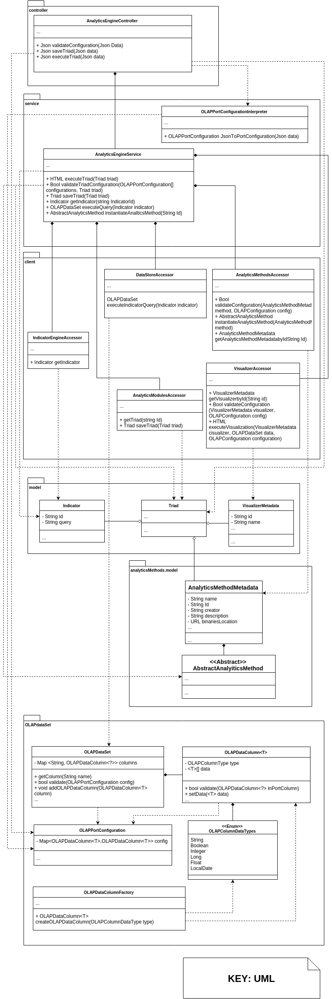
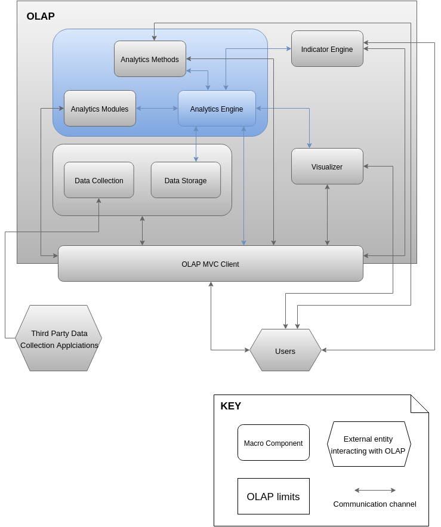

ANALYTICS ENGINE: MODULE VIEWS
Primary Presentation

Element Catalog
Package: controller
This package will expose REST HTTP endpoints in order to be used by mainly the <<MacroComponent>>OpenLAPWebClient but other clients can connect to the same endpoints. It exposes the main methods of the system as a whole unit.
- AnalyticsEngineController: This class will be the primary facade to the OpenLAP system. It holds methods that serialize request and responses to the OpenLAP system. It has a method to validate configurations (mapings between outputs of Indicator or Analytics Methods to inputs of Analytics Methods or Visualization) as well as triad saving methods (a tuple of Idicator / Analytics Method / Visualization) and the execution of the triad itself. It transforms the requests from JSON to/from the specific objects and forwards them to the
AnalyticsEngineService.
Package: service
The heart of the orchestration component of the Analytics Engine. It holds a class that provides the main workflow of events to execute triads and the methods that enable their validation.
- AnalyticsEngineService:This is the main orchestration class of the macro component. It has clients to access each of the other Macro Components. When a triad is executed, it gets the Indicator, Analytics Method and Visualization, as well as the OLAPPortConfigurations corresponding to the configurations between Indicator outputs to Analytics Method inputs as well as Analytics Method outputs to Visualization Inputs. It verifies that the mappings of the configuration are correct, executes the query and forwards them to the appropriate Analytics Method and/or Visualization. It also allows to save Triads that are created by the users.
Package: client
These clients or accessors allow the main service to connect to the other macro components of the OpenLAP. The connection can be local in case of the Analytics Methods and Analytics Modules or remote, in case of the other macro components. Each of the accessors is a proxy of the methods required by the Analytics Engine to the respective controllers on the other macro components.
- IndicatorEngineAccessor:Handles the interaction to the API of the Indicator Engine. Principally gets indicators for executing the queries there saved to the Data Store.
- DataStoreAccessor: Handles interaction to the API of the Data Collection and Data Store macro component. In particular, runs the queries saved in the indicators and converts the result into
OLAPDataSets.
- AnalyticsModulesAccessor: Handles interaction to the API of the Analytics Modules macro component. The methods in particular allow the Analytics Engine to retrieve and save triads.
- AnalyticsMethodsAccessor: Handles interaction to the API of the Analytics Methods macro component. It acts as a proxy to the
AnalyticsMethodsService which resides in the same JVM as this macro component. It allows the AnalyticsEngineService to instantiate and run Analytics Methods in the form of AbstactAnalyticsMethod objects.
- VisualizerAccessor: Handles interaction to the API of the Visualizer macro component. The methods of this client allows to get the specific Visualization, validate
OLAPPortConfigurations and execute the Visualization to forward to the requests of triad executions.
Package: model
- IndicatorReferene: Object to store the Indicators retrieved from the Indicator Engine macro component. Of particular interest is the query that must be executed against the Data Collection and Data Store macro component.
- Triad: This object encapsulates the reference to an Indicator, an Analytics Method (in particular its metadata object) and a Visualizer (also the metadata).
- VisualizationReference: Reference to the Visualizer against which the visualization queries will be executed through the respective client.
Package: analyticsMethods.model
This is the same package as the Analytics Methods macro component, and since the Analytics Engine resides in the same running environment, it will leverage on the model to handle the retreival and execution of Analytics Methods metadata and Analytics Method itself (instrances of AbstactAnalyticsMethod extending classes). Refer to Section 4.5.1 for a complete description of the model in the context of the Analytics Methods macro component.
- AnalyticsMethodMetadata: This is aggregated into the
Triad and is used to locate the instance of the specific extension of the AbstactAnalyticsMethod which corresponds to a specific Analytics Method.
- <<Abstract>>AbstactAnalyticsMethod: The extending classes submitted with the Analytics Methods macro component by Researchers and Developers are here used, in particular leveraging on their validation and execution methods in the execution of a triad.
Package OpenLAP-DataSet
This is a common package for the components that conform the OpenLAP Core (e.g. the Analytics Engine, Analytics Methods and Analytics Modules macro components) as the Analytics Engine. It allows the different macro components in it to have a common data object that is generic and compatible with table-like data.
- OLAPDataSet: This is a container for columns. It encapsulates a map between column names and the
OLAPDataColumns. When Researchers and Developers are creating new Analytics Methods or Visualizations they must use this data transfer object in order to allows dynamic type checking from the sources. The possible mappings are (Data from Indicator queries to Analytics Methods or Visualizations
- OLAPDataColumn<T>: This class represents a one dimensional column that is to be aggregated by the
OLAPDataSet. It holds properties for type and array of the data. It also allows to verify that an input is valid for the specific column.
- OLAPPortConfiguration: This is a simple mapping between different columns. Its purpose is to support a dynamic checking for the input data from origin to the input port of the using classes. Different configurations can be: Input data form Indicators (Queries) to Analytics Methods or to Visualizations, Analytics Methods to Visualizations, Analytics Methods to other Analytics Methods.
- OLAPDataColumnFactory: A factory to create objects of type
OLAPDataColumn depending on the types available on <<Enum>>OLAPColumnDataTypes.
- <<Enum>>OLAPColumnDataTypes: An enumerator to be used by the
OLAPDataColumnFactory. Each entry represents valid column types.
Context Diagram

Variability Guide
- The Analytics Methods to be executed are submitted to the system on the Analytics Method macro component. The
AnalyticsEngineService instantiates them and executes them.
Rationale
The Analytics Engine is the main orchestration piece and enables the main flow of execution for the triads, which contain references to created Indicators, submitted Analytics Methods and available Visualizations. The run-time of the Indicator and the visualization is external, however the Analytics Methods are run locally in the Same JVM (at least the instantiation). Since the Analytics Engine has to interact with the other components, the modular and extensible nature of the different macro components is then exploited to establish communication through the different REST APIs. At the same time, the main services of the Analytics Engine are encapsulated in the inner controller that enables the Client(s) to execute triads.
- Section 4.2.2 exposes the Component and Connector views of this macro component
- Section 4.1 explains the Data Collection and Data Storage
- Section 4.3 explains the Indicator engine
- Section 4.4 explains the Visualizer
- Section 4.5 explains the Analytics Methods
- Section 4.6 explains the Analytics Modules